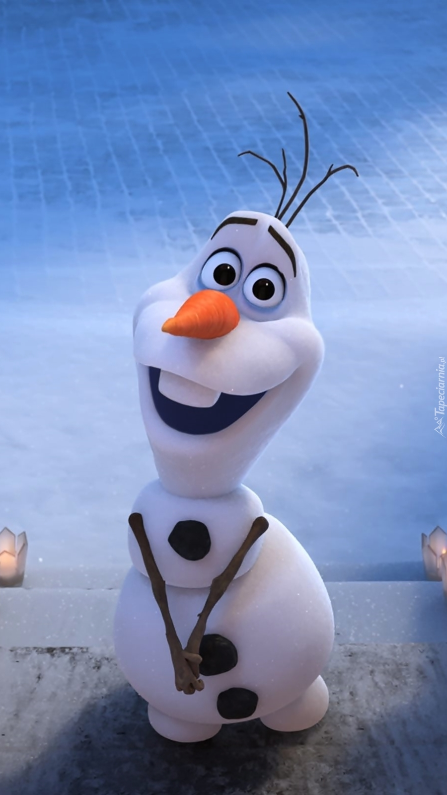
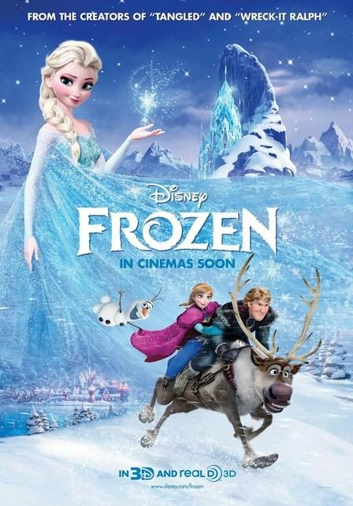

Kraina lodu (2013)
Fabuła
Elsa jest starszą córką króla i królowej Arendelle, posiadającą moc tworzenia lodu i śniegu. Podczas zabawy z siostrą Anną przypadkowo trafia ją zaklęciem w głowę i ta traci przytomność. Anna zostaje zawieziona do Króla Trolli, który ratuje jej życie i usuwa wspomnienia dotyczące magicznej mocy Elsy. Rodzice postanawiają odizolować Elsę od świata zewnętrznego, dopóki nie nauczy się kontrolować swoich mocy. Otrzymuje również rękawiczki, by nie zamrażała wszystkiego poprzez dotyk. Lata mijają, a siostry tracą kontakt. W wieku nastoletnim tracą rodziców, którzy giną podczas sztormu. Po kolejnych trzech latach, z okazji koronowania Elsy na nową królową, zostają otwarte bramy zamku i odbywa się bal. Na nim Anna poznaje księcia Hansa i zgadza się na jego ślubną propozycję. Błogosławieństwa odmawia Elsa, co doprowadza do kłótni między siostrami. Pod wpływem emocji Anna zdejmuje rękawiczkę Elsy, przez co następuje ujawnienie się jej mocy. Przerażeni goście uważają Elzę za wiedźmę, a ta, w obawie przed skrzywdzeniem innych, postanawia uciec z miasta i udaje się w góry. Tam wznosi dla siebie lodowy pałac, przywraca do życia bałwana o imieniu Olaf, którego ulepiły z Anną jako dzieci. Nie wiedziała, że przez uwolnienie swojej mocy sprowadziła na królestwo Arendelle wieczną zimę. Anna postanawia odnaleźć siostrę i przywrócić lato. W trakcie wyprawy w kierunku gór spotyka Kristoffa oraz jego towarzysza, renifera Svena. Wspólnie wyruszają na Lodowy Wierch, gdzie zamieszkała Elsa. W dotarciu do celu pomaga im napotkany bałwan Olaf.
Przy spotkaniu sióstr Elsa przyznała, że nie wie, jak przywrócić lato i nie wróci do królestwa, po czym każe Annie odejść. W przypływie emocji Elsa ponownie traci kontrolę nad swoją mocą i trafia zaklęciem w serce siostry, a jednocześnie wyczarowuje olbrzymiego śnieżnego potwora, który ma wyrzucić gości. W drodze powrotnej Anna zaczyna czuć coraz gorzej, a pasemka jej włosów zaczynają zmieniać kolor w biały. Kristoff postanawia poszukać pomocy u swoich przyjaciół, trolli, jednak Król Trolli nie jest w stanie pomóc. Annę może uratować jedynie pocałunek prawdziwej miłości. Kristoff postanowił zabrać Annę do księcia Hansa, by ten zdjął zaklęcie. W tym czasie Hans wraz z wojskami atakuje pałac Elsy. Królowa traci przytomność i zostaje pojmana. Hans żąda od niej zdjęcia zaklęcia wiecznej zimy, ale okazuje się to niemożliwe, więc postanawia ją zabić. Tymczasem Anna dociera do Arendelle, gdzie dowiaduje się, że Hans jej nie kochał, a wyznaniem miłości chciał ułatwić sobie objęcie tronu Arendelle. Więzi chorą Annę w komnacie i oznajmia poddanym o jej śmierci. Na pomoc Annie przybywa Olaf, który ją uwalnia, oraz zakochany w dziewczynie Kristoff. W tym samym czasie Hans przekonuje Elsę o jej winie wobec śmierci siostry. Zrozpaczona królowa, z powodu utraty sił, o mało nie ginie, lecz na ratunek przybywa jej Anna, sama jednak zamienia się w lodowy posąg. Elsa pełna żalu całuje Annę, a magia jej miłości pozwala na odczarowanie młodszej siostry i przywrócenie lata w Arendelle. Siostry godzą się, a Hans zostaje zesłany do swojej ojczyzny, by tam zostać ukarany przez dwunastu starszych braci. Bałwan Olaf otrzymuje własną śniegową chmurę, by nie roztopił się w lecie, renifer Sven staje się oficjalnym „królewskim dostawcą lodu”, a Kristoff zdobywa serce ukochanej Anny.